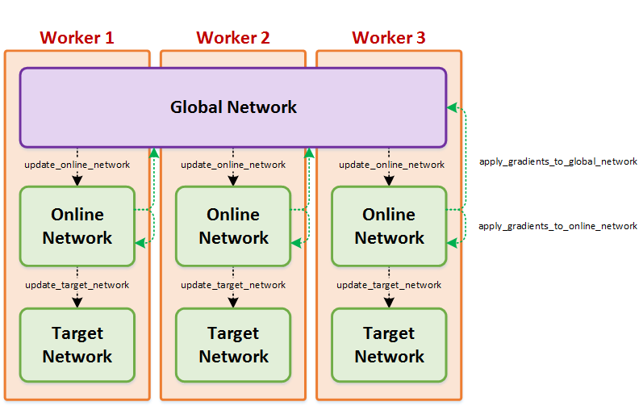

Architectures¶
Architectures contain all the classes that implement the neural network related stuff for the agent. Since Coach is intended to work with multiple neural network frameworks, each framework will implement its own components under a dedicated directory. For example, tensorflow components will contain all the neural network parts that are implemented using TensorFlow.
-
class
rl_coach.base_parameters.NetworkParameters(force_cpu=False, async_training=False, shared_optimizer=True, scale_down_gradients_by_number_of_workers_for_sync_training=True, clip_gradients=None, gradients_clipping_method=<GradientClippingMethod.ClipByGlobalNorm: 0>, l2_regularization=0, learning_rate=0.00025, learning_rate_decay_rate=0, learning_rate_decay_steps=0, input_embedders_parameters={}, embedding_merger_type=<EmbeddingMergerType.Concat: 0>, middleware_parameters=None, heads_parameters=[], use_separate_networks_per_head=False, optimizer_type='Adam', optimizer_epsilon=0.0001, adam_optimizer_beta1=0.9, adam_optimizer_beta2=0.99, rms_prop_optimizer_decay=0.9, batch_size=32, replace_mse_with_huber_loss=False, create_target_network=False, tensorflow_support=True)[source]¶ Parameters: - force_cpu – Force the neural networks to run on the CPU even if a GPU is available
- async_training – If set to True, asynchronous training will be used, meaning that each workers will progress in its own speed, while not waiting for the rest of the workers to calculate their gradients.
- shared_optimizer – If set to True, a central optimizer which will be shared with all the workers will be used for applying gradients to the network. Otherwise, each worker will have its own optimizer with its own internal parameters that will only be affected by the gradients calculated by that worker
- scale_down_gradients_by_number_of_workers_for_sync_training – If set to True, in synchronous training, the gradients of each worker will be scaled down by the number of workers. This essentially means that the gradients applied to the network are the average of the gradients over all the workers.
- clip_gradients – A value that will be used for clipping the gradients of the network. If set to None, no gradient clipping will be applied. Otherwise, the gradients will be clipped according to the gradients_clipping_method.
- gradients_clipping_method – A gradient clipping method, defined by a GradientClippingMethod enum, and that will be used to clip the gradients of the network. This will only be used if the clip_gradients value is defined as a value other than None.
- l2_regularization – A L2 regularization weight that will be applied to the network weights while calculating the loss function
- learning_rate – The learning rate for the network
- learning_rate_decay_rate – If this value is larger than 0, an exponential decay will be applied to the network learning rate. The rate of the decay is defined by this parameter, and the number of training steps the decay will be applied is defined by learning_rate_decay_steps. Notice that both parameters should be defined in order for this to work correctly.
- learning_rate_decay_steps – If the learning_rate_decay_rate of the network is larger than 0, an exponential decay will be applied to the network learning rate. The number of steps the decay will be applied is defined by this parameter. Notice that both this parameter, as well as learning_rate_decay_rate should be defined in order for the learning rate decay to work correctly.
- input_embedders_parameters – A dictionary mapping between input names and input embedders (InputEmbedderParameters) to use for the network. Each of the keys is an input name as returned from the environment in the state. For example, if the environment returns a state containing ‘observation’ and ‘measurements’, then the keys for the input embedders dictionary can be either ‘observation’ to use the observation as input, ‘measurements’ to use the measurements as input, or both. The embedder type will be automatically selected according to the input type. Vector inputs will produce a fully connected embedder, and image inputs will produce a convolutional embedder.
- embedding_merger_type – The type of embedding merging to use, given by one of the EmbeddingMergerType enum values. This will be used to merge the outputs of all the input embedders into a single embbeding.
- middleware_parameters – The parameters of the middleware to use, given by a MiddlewareParameters object. Each network will have only a single middleware embedder which will take the merged embeddings from the input embedders and pass them through more neural network layers.
- heads_parameters – A list of heads for the network given by their corresponding HeadParameters. Each network can have one or multiple network heads, where each one will take the output of the middleware and make some additional computation on top of it. Additionally, each head calculates a weighted loss value, and the loss values from all the heads will be summed later on.
- use_separate_networks_per_head – A flag that allows using different copies of the input embedders and middleware for each one of the heads. Regularly, the heads will have a shared input, but in the case where use_separate_networks_per_head is set to True, each one of the heads will get a different input.
- optimizer_type – A string specifying the optimizer type to use for updating the network. The available optimizers are Adam, RMSProp and LBFGS.
- optimizer_epsilon – An internal optimizer parameter used for Adam and RMSProp.
- adam_optimizer_beta1 – An beta1 internal optimizer parameter used for Adam. It will be used only if Adam was selected as the optimizer for the network.
- adam_optimizer_beta2 – An beta2 internal optimizer parameter used for Adam. It will be used only if Adam was selected as the optimizer for the network.
- rms_prop_optimizer_decay – The decay value for the RMSProp optimizer, which will be used only in case the RMSProp optimizer was selected for this network.
- batch_size – The batch size to use when updating the network.
- replace_mse_with_huber_loss –
- create_target_network – If this flag is set to True, an additional copy of the network will be created and initialized with the same weights as the online network. It can then be queried, and its weights can be synced from the online network at will.
- tensorflow_support – A flag which specifies if the network is supported by the TensorFlow framework.
Architecture¶
-
class
rl_coach.architectures.architecture.Architecture(agent_parameters: rl_coach.base_parameters.AgentParameters, spaces: rl_coach.spaces.SpacesDefinition, name: str = '')[source]¶ Creates a neural network ‘architecture’, that can be trained and used for inference.
Parameters: - agent_parameters – the agent parameters
- spaces – the spaces (observation, action, etc.) definition of the agent
- name – the name of the network
-
accumulate_gradients(inputs: Dict[str, numpy.ndarray], targets: List[numpy.ndarray], additional_fetches: list = None, importance_weights: numpy.ndarray = None, no_accumulation: bool = False) → Tuple[float, List[float], float, list][source]¶ Given a batch of inputs (i.e. states) and targets (e.g. discounted rewards), computes and accumulates the gradients for model parameters. Will run forward and backward pass to compute gradients, clip the gradient values if required and then accumulate gradients from all learners. It does not update the model weights, that’s performed in apply_and_reset_gradients method.
Once gradients are accumulated, they are accessed by accumulated_gradients property of this class.å
Parameters: - inputs –
typically the environment states (but can also contain other data for loss) (e.g. {‘observation’: numpy.ndarray} with observation of shape (batch_size, observation_space_size) or
(batch_size, observation_space_size, stack_size) or{‘observation’: numpy.ndarray, ‘output_0_0’: numpy.ndarray} with output_0_0 of shape (batch_size,))
- targets – targets for calculating loss. For example discounted rewards for value network for calculating the value-network loss would be a target. Length of list and order of arrays in the list matches that of network losses which are defined by network parameters
- additional_fetches – list of additional values to fetch and return. The type of each list element is framework dependent.
- importance_weights – ndarray of shape (batch_size,) to multiply with batch loss.
- no_accumulation – if True, set gradient values to the new gradients, otherwise sum with previously calculated gradients
Returns: tuple of total_loss, losses, norm_unclipped_grads, fetched_tensors total_loss (float): sum of all head losses losses (list of float): list of all losses. The order is list of target losses followed by list of
regularization losses. The specifics of losses is dependant on the network parameters (number of heads, etc.)
norm_unclippsed_grads (float): global norm of all gradients before any gradient clipping is applied fetched_tensors: all values for additional_fetches
- inputs –
-
apply_and_reset_gradients(gradients: List[numpy.ndarray], scaler: float = 1.0) → None[source]¶ Applies the given gradients to the network weights and resets the gradient accumulations. Has the same impact as calling apply_gradients, then reset_accumulated_gradients.
Parameters: - gradients – gradients for the parameter weights, taken from accumulated_gradients property of an identical network (either self or another identical network)
- scaler – A scaling factor that allows rescaling the gradients before applying them
-
apply_gradients(gradients: List[numpy.ndarray], scaler: float = 1.0) → None[source]¶ Applies the given gradients to the network weights. Will be performed sync or async depending on network_parameters.async_training
Parameters: - gradients – gradients for the parameter weights, taken from accumulated_gradients property of an identical network (either self or another identical network)
- scaler – A scaling factor that allows rescaling the gradients before applying them
-
collect_savers(parent_path_suffix: str) → rl_coach.saver.SaverCollection[source]¶ Collection of all savers for the network (typically only one saver for network and one for ONNX export) :param parent_path_suffix: path suffix of the parent of the network
(e.g. could be name of level manager plus name of agent)Returns: saver collection for the network
-
static
construct(variable_scope: str, devices: List[str], *args, **kwargs) → rl_coach.architectures.architecture.Architecture[source]¶ Construct a network class using the provided variable scope and on requested devices :param variable_scope: string specifying variable scope under which to create network variables :param devices: list of devices (can be list of Device objects, or string for TF distributed) :param args: all other arguments for class initializer :param kwargs: all other keyword arguments for class initializer :return: an object which is a child of Architecture
-
get_variable_value(variable: Any) → numpy.ndarray[source]¶ Gets value of a specified variable. Type of variable is dependant on the framework. Example of a variable is head.kl_coefficient, which could be a symbol for evaluation or could be a string representing the value.
Parameters: variable – variable of interest Returns: value of the specified variable
-
get_weights() → List[numpy.ndarray][source]¶ Gets model weights as a list of ndarrays. It is used for synchronizing weight between two identical networks.
Returns: list weights as ndarray
-
static
parallel_predict(sess: Any, network_input_tuples: List[Tuple[Architecture, Dict[str, numpy.ndarray]]]) → Tuple[numpy.ndarray, ...][source]¶ Parameters: - sess – active session to use for prediction
- network_input_tuples – tuple of network and corresponding input
Returns: list or tuple of outputs from all networks
-
predict(inputs: Dict[str, numpy.ndarray], outputs: List[Any] = None, squeeze_output: bool = True, initial_feed_dict: Dict[Any, numpy.ndarray] = None) → Tuple[numpy.ndarray, ...][source]¶ Given input observations, use the model to make predictions (e.g. action or value).
Parameters: - inputs – current state (i.e. observations, measurements, goals, etc.) (e.g. {‘observation’: numpy.ndarray} of shape (batch_size, observation_space_size))
- outputs – list of outputs to return. Return all outputs if unspecified. Type of the list elements depends on the framework backend.
- squeeze_output – call squeeze_list on output before returning if True
- initial_feed_dict – a dictionary of extra inputs for forward pass.
Returns: predictions of action or value of shape (batch_size, action_space_size) for action predictions)
-
reset_accumulated_gradients() → None[source]¶ Sets gradient of all parameters to 0.
Once gradients are reset, they must be accessible by accumulated_gradients property of this class, which must return a list of numpy ndarrays. Child class must ensure that accumulated_gradients is set.
-
set_variable_value(assign_op: Any, value: numpy.ndarray, placeholder: Any)[source]¶ Updates the value of a specified variable. Type of assign_op is dependant on the framework and is a unique identifier for assigning value to a variable. For example an agent may use head.assign_kl_coefficient. There is a one to one mapping between assign_op and placeholder (in the example above, placeholder would be head.kl_coefficient_ph).
Parameters: - assign_op – a parameter representing the operation for assigning value to a specific variable
- value – value of the specified variable used for update
- placeholder – a placeholder for binding the value to assign_op.
-
set_weights(weights: List[numpy.ndarray], rate: float = 1.0) → None[source]¶ Sets model weights for provided layer parameters.
Parameters: - weights – list of model weights in the same order as received in get_weights
- rate – controls the mixture of given weight values versus old weight values. i.e. new_weight = rate * given_weight + (1 - rate) * old_weight
Returns: None
-
train_on_batch(inputs: Dict[str, numpy.ndarray], targets: List[numpy.ndarray], scaler: float = 1.0, additional_fetches: list = None, importance_weights: numpy.ndarray = None) → Tuple[float, List[float], float, list][source]¶ Given a batch of inputs (e.g. states) and targets (e.g. discounted rewards), takes a training step: i.e. runs a forward pass and backward pass of the network, accumulates the gradients and applies an optimization step to update the weights. Calls accumulate_gradients followed by apply_and_reset_gradients. Note: Currently an unused method.
Parameters: - inputs – typically the environment states (but can also contain other data necessary for loss). (e.g. {‘observation’: numpy.ndarray} with observation of shape (batch_size, observation_space_size) or (batch_size, observation_space_size, stack_size) or {‘observation’: numpy.ndarray, ‘output_0_0’: numpy.ndarray} with output_0_0 of shape (batch_size,))
- targets – target values of shape (batch_size, ). For example discounted rewards for value network for calculating the value-network loss would be a target. Length of list and order of arrays in the list matches that of network losses which are defined by network parameters
- scaler – value to scale gradients by before optimizing network weights
- additional_fetches – list of additional values to fetch and return. The type of each list element is framework dependent.
- importance_weights – ndarray of shape (batch_size,) to multiply with batch loss.
Returns: tuple of total_loss, losses, norm_unclipped_grads, fetched_tensors total_loss (float): sum of all head losses losses (list of float): list of all losses. The order is list of target losses followed by list
of regularization losses. The specifics of losses is dependant on the network parameters (number of heads, etc.)
norm_unclippsed_grads (float): global norm of all gradients before any gradient clipping is applied fetched_tensors: all values for additional_fetches
NetworkWrapper¶
{kind=link}
-
class
rl_coach.architectures.network_wrapper.NetworkWrapper(agent_parameters: rl_coach.base_parameters.AgentParameters, has_target: bool, has_global: bool, name: str, spaces: rl_coach.spaces.SpacesDefinition, replicated_device=None, worker_device=None)[source]¶ The network wrapper contains multiple copies of the same network, each one with a different set of weights which is updating in a different time scale. The network wrapper will always contain an online network. It will contain an additional slow updating target network if it was requested by the user, and it will contain a global network shared between different workers, if Coach is run in a single-node multi-process distributed mode. The network wrapper contains functionality for managing these networks and syncing between them.
-
apply_gradients_and_sync_networks(reset_gradients=True)[source]¶ Applies the gradients accumulated in the online network to the global network or to itself and syncs the networks if necessary
Parameters: reset_gradients – If set to True, the accumulated gradients wont be reset to 0 after applying them to the network. this is useful when the accumulated gradients are overwritten instead if accumulated by the accumulate_gradients function. this allows reducing time complexity for this function by around 10%
-
apply_gradients_to_global_network(gradients=None)[source]¶ Apply gradients from the online network on the global network
Parameters: gradients – optional gradients that will be used instead of teh accumulated gradients Returns:
-
apply_gradients_to_online_network(gradients=None)[source]¶ Apply gradients from the online network on itself
Returns:
-
collect_savers(parent_path_suffix: str) → rl_coach.saver.SaverCollection[source]¶ Collect all of network’s savers for global or online network Note: global, online, and target network are all copies fo the same network which parameters that are
updated at different rates. So we only need to save one of the networks; the one that holds the most recent parameters. target network is created for some agents and used for stabilizing training by updating parameters from online network at a slower rate. As a result, target network never contains the most recent set of parameters. In single-worker training, no global network is created and online network contains the most recent parameters. In vertical distributed training with more than one worker, global network is updated by all workers and contains the most recent parameters. Therefore preference is given to global network if it exists, otherwise online network is used for saving.Parameters: parent_path_suffix – path suffix of the parent of the network wrapper (e.g. could be name of level manager plus name of agent) Returns: collection of all checkpoint objects
-
parallel_prediction(network_input_tuples: List[Tuple])[source]¶ Run several network prediction in parallel. Currently this only supports running each of the network once.
Parameters: network_input_tuples – a list of tuples where the first element is the network (online_network, target_network or global_network) and the second element is the inputs Returns: the outputs of all the networks in the same order as the inputs were given
-
set_is_training(state: bool)[source]¶ Set the phase of the network between training and testing
Parameters: state – The current state (True = Training, False = Testing) Returns: None
-
train_and_sync_networks(inputs, targets, additional_fetches=[], importance_weights=None)[source]¶ A generic training function that enables multi-threading training using a global network if necessary.
Parameters: - inputs – The inputs for the network.
- targets – The targets corresponding to the given inputs
- additional_fetches – Any additional tensor the user wants to fetch
- importance_weights – A coefficient for each sample in the batch, which will be used to rescale the loss error of this sample. If it is not given, the samples losses won’t be scaled
Returns: The loss of the training iteration
-